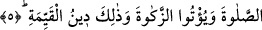

peygamber olduğunu bile bile vaadinden döndüğüne göre başkalarının döneceklerini
vurgulamaktır. Çünkü bir âlimin inkârı bir câhilin inkârından daha çirkin ve daha
fecîdir.
Âyetin mânâsı şudur: “Onlar o vaadlerinden ancak, kendilerine apaçık bir delil
geldikten sonra ayrılığa düştüler “O apaçık delil; kitaplarında geleceği vaad olunan
peygamberin Hz. Peygamber olduğuna hiç kuşkusuz delâlet eden haberdir.
5. Halbuki onlara ancak, dini yalnız O’na has kılarak ve hanifler olarak Allah’a
kulluk etmeleri, namaz kılmaları ve zekât vermeleri emrolunmuştu. Sağlam din de
budur.
“Halbuki onlara ancak, dini yalnız O’na has kılarak ve hanifler olarak sâdece
Allah’a kulluk etmeleri” bedenî ibadetler konusunda temel direk ve esas olan
“namaz”ı “kılmaları ve” mâlî ibadetler alanında temel esas olan “zekat”ı “vermeleri
emrolunmuştu.”
Bu âyet, onların yaptıklarının ne kadar çirkin olduğunu ifâde etmektedir. Âyette
vurgulanmak istenen mânâ şudur: Halbuki onlara kitaplarında ne emrolunmuşsa, ancak
Allah’a kulluk etmeleri için emrolunmuştu.
“Li ya’budû” kelimesinin başındaki lam, aslında hikmet ve maslahat içindir. İfadeyi
biraz açarsak şöyle denmiş oluyor: Allah’ın fiilleri her ne kadar bir amaç ile
açıklanmazsa da bir takım hikmet ve maslahatlarla sonuçlanır. Çoğu zaman lâmu’l-garaz
bir fiilin sonucu olarak ortaya çıkan hikmeti ifâde etmek için kullanılır.
Sebep olarak, sâdece ehl-i kitabın kendi kitaplarında Allah’a ihlasla ibâdet
etmelerinin emredildiğinin ifâde edilmesi ve meâlen: “Onlara sâdece Allah’a huşû ile
eğilmeleri emredildi” denmesi, onlardan istenenler arasında, Cennete ermek ve
Cehennemden kurtulmak gibi başka bir şeyin mükellefiyet olarak getirilmeyişi ehl-i
sünnetin görüşünü desteklemektedir. Ehl-i sünnet âlimleri der ki: “İbâdet insanı Cennete
götürdüğü veya Cehennem azabından kurtarıp uzaklaştırdığı için değil, tam tersine sen
bir kul, O’da Rab olduğu için farz kılınmıştır.” Allah, dinde hiçbir sevap ve cezâ
olmasa da Rabdır. Şu halde Allah’ın ibdeti emretmesi sırf kulluk için, O’nun
Rab’lığının ve Mâlik oluşunun bir gereğidir.
Öte yandan bu âyet-i kerimede, işâret edilir ki, “Allah’a sevap ümidi ve cezâ korkusu
ile ibâdet eden kişi açısından Ma’bûd, gerçekte sevaptır ve cezâdır. Hakk ise buna
vâsıtadır. İbâdetten asıl maksad Ma’ruf olan şeydir. Şu halde ibâdetle Ma’bud, irfanla
da Ma’rûf hedeflenmeli, gözetilmelidir. Kişi Allah’tan başka bir şeyi göz önüne